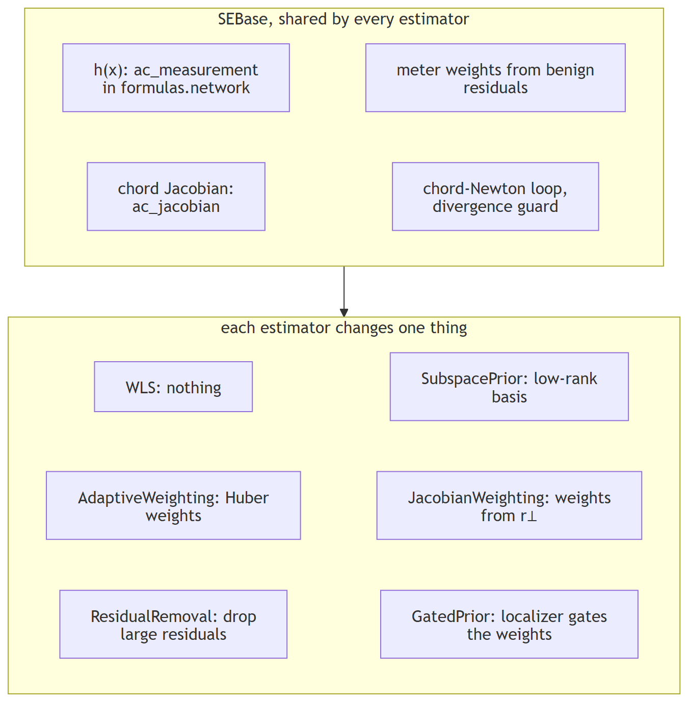
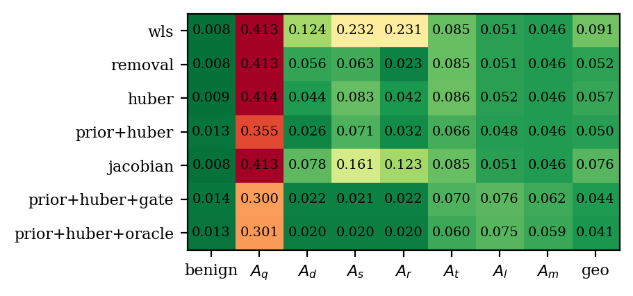
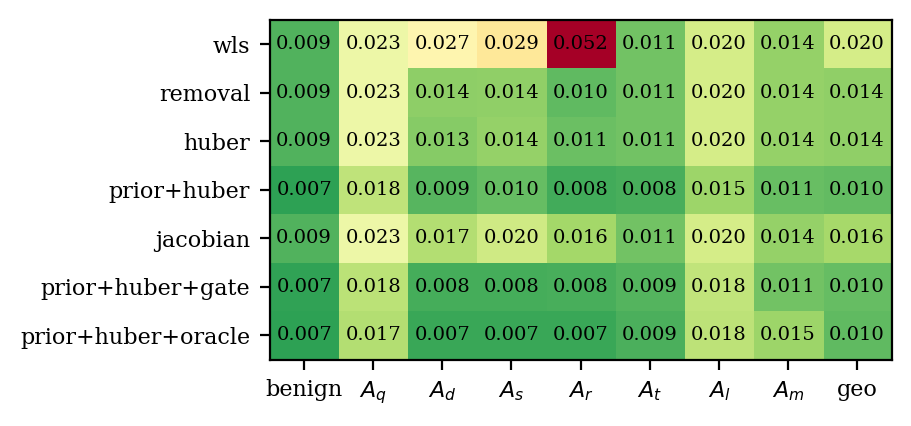
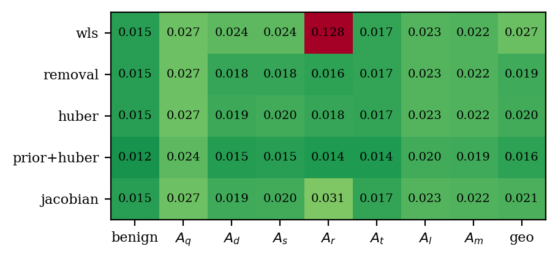
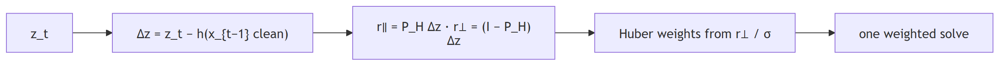
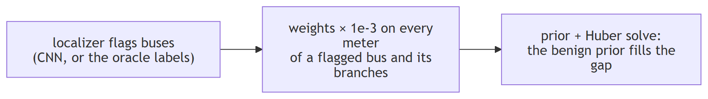

State estimation with fdia_graph.se¶
Given a scan of noisy, possibly attacked measurements, estimate the true bus voltages and angles.
Every timeline ships a noiseless clean layer, so the estimate is scored against exact ground truth.
import fdia_graph as fg
from fdia_graph.se import WLS, AdaptiveWeighting, SubspacePrior
train = fg.load("ieee14", split="train")
test = fg.load("ieee14", split="test")
est = SubspacePrior(rank_frac=0.2, reweight="huber", c=1.5).fit(train)
xhat = est.estimate(test) # [n, 2N-1] = [theta rad (non-slack) | V pu (all buses)]
rep = est.score(test) # per-family angle/voltage MAE vs the clean truth

| needs | pip install "fdia-graph[se]", a timeline (data release v0.8.3) or a v0.7.2 record shard, units="physical" |
|---|---|
| walkthrough | ../guides/state_estimation.md |
| state | 2N-1: every voltage magnitude, every non-slack angle; slack angle fixed to one reference angle, theta_ref, taken from the training split at fit time (the case's reference angle on the released pools) |
The method classes¶
| Class | What it changes | Knobs |
|---|---|---|
WLS |
Nothing. The audited baseline: least squares weighted by accuracy-class meter error | |
ResidualRemoval |
Classical largest-normalized-residual removal: the one largest residual above the threshold per pass, re-solved, with an observability guard | threshold |
AdaptiveWeighting |
Iteratively reweighted least squares (the Huber M-estimator) | c |
SubspacePrior |
Restricts the solve to a low-rank benign operating subspace, optionally composed with Huber | rank_frac, reweight |
JacobianWeighting |
Huber weights from the physically unexplained part of the scan-to-scan measurement change (the Jacobian-informed digest), one solve; reweight="huber" adds the classical passes on top |
c, reweight, huber_c |
GatedPrior |
The proposed estimator with a localizer gating the weights: meters on flagged buses and their incident flows are down-weighted so the prior fills in the state there; secured meters are never down-weighted |
gate, gate_factor, secured |
Results¶
| protocol | |
|---|---|
| partition | test split, hyperparameters validation-selected in the estimation paper |
Huber c / rank fraction |
1.5 / 0.20 (14), 2.5 / 0.50 (118), 6.0 / 0.50 (300) |
| removal threshold | 4.0 (14), 5.0 (118), 5.0 (300); on IEEE-300 it runs 2.4 hours (the per-record observability guard) and cuts the WLS angle error 28% |
| cell | geometric mean of the MAE over the eight record classes (benign and the seven families); full metrics in results/se_ieee{14,118,300}.json |
| data | release v0.8.3; the two gated IEEE-300 cells are pending a rerun |
Estimator comparison (bold marks the proposed rows, not the best cell)
| Estimator | IEEE 14 | IEEE 118 | IEEE 300 |
|---|---|---|---|
| Angle MAE (deg) | |||
| WLS baseline | 0.091 | 0.020 | 0.027 |
| Residual removal | 0.052 | 0.014 | 0.019 |
| Adaptive weighting | 0.057 | 0.014 | 0.020 |
| Prior + Huber (proposed) | 0.050 | 0.010 | 0.016 |
| Jacobian weighting | 0.076 | 0.016 | 0.021 |
| Prior + Huber + CNN gate | 0.044 | 0.010 | |
| Prior + Huber + oracle gate (ceiling) | 0.041 | 0.010 | |
| WLS error reduction | 45% | 50% | 40% |
| Estimator | IEEE 14 | IEEE 118 | IEEE 300 |
|---|---|---|---|
| Voltage MAE (10^-3 pu) | |||
| WLS baseline | 0.839 | 0.177 | 0.219 |
| Residual removal | 0.513 | 0.121 | 0.171 |
| Adaptive weighting | 0.540 | 0.122 | 0.177 |
| Prior + Huber (proposed) | 0.160 | 0.029 | 0.064 |
| Jacobian weighting | 0.695 | 0.138 | 0.183 |
| Prior + Huber + CNN gate | 0.239 | 0.032 | |
| Prior + Huber + oracle gate (ceiling) | 0.212 | 0.034 | |
| WLS error reduction | 81% | 84% | 71% |
| paper (v0.4.1 data) | 14 | 118 | 300 |
|---|---|---|---|
| angle, WLS → proposed | 0.164 → 0.068 | 0.075 → 0.033 | 0.129 → 0.068 |
| voltage reduction | 57% | 85% | 68% |
The timelines carry the accuracy-class meter model (since v0.7.2), so absolute errors are lower than the paper's; the ordering holds and the reductions stay of the same size (angle 45, 50 and 40% here against 59, 56 and 47%).
Per-family results of the proposed estimator. Baseline cells are the WLS error, reduction is the proposed estimator's percent reduction over that baseline.
| Family | Base angle (deg) 14 | Base angle (deg) 118 | Base angle (deg) 300 | Base volt (10^-3) 14 | Base volt (10^-3) 118 | Base volt (10^-3) 300 | Angle red. (%) 14 | Angle red. (%) 118 | Angle red. (%) 300 | Volt red. (%) 14 | Volt red. (%) 118 | Volt red. (%) 300 |
|---|---|---|---|---|---|---|---|---|---|---|---|---|
| Benign | 0.008 | 0.009 | 0.015 | 0.15 | 0.09 | 0.15 | -56 | 27 | 23 | 58 | 81 | 68 |
| Bias (Ad) | 0.124 | 0.027 | 0.024 | 3.53 | 0.53 | 0.33 | 79 | 65 | 40 | 97 | 95 | 81 |
| Scaling (As) | 0.232 | 0.029 | 0.024 | 1.07 | 0.33 | 0.25 | 69 | 65 | 37 | 85 | 91 | 73 |
| Replay (Ar) | 0.231 | 0.052 | 0.128 | 1.22 | 0.21 | 0.43 | 86 | 85 | 89 | 94 | 91 | 86 |
| Stealthy re-solve (Aq) | 0.413 | 0.023 | 0.027 | 3.41 | 0.17 | 0.21 | 14 | 23 | 12 | 75 | 72 | 56 |
| Slow ramp (At) | 0.085 | 0.011 | 0.017 | 0.75 | 0.10 | 0.16 | 23 | 26 | 20 | 76 | 80 | 66 |
| Load redistribution (Al) | 0.051 | 0.020 | 0.023 | 0.41 | 0.16 | 0.17 | 6 | 27 | 14 | 54 | 65 | 60 |
| Multi-snapshot (Am) | 0.046 | 0.014 | 0.022 | 0.35 | 0.12 | 0.17 | 0 | 25 | 12 | 51 | 65 | 61 |
Angle MAE per estimator and family (degrees, lower is better, geo is the summary column):
| IEEE 14 | IEEE 118 | IEEE 300 |
|---|---|---|
 |
 |
 |
| families | what happens | angle reduction | why |
|---|---|---|---|
Ad As Ar (in place) |
robustness cleans up what it can see | 69 to 86% on 14, 65 to 85% on 118, 37 to 89% on 300; voltage 73 to 97% everywhere | corrupted meters leave large residuals for removal, Huber and the prior to reject |
Aq At Al Am (stealthy) |
move part of the way, through the prior alone | 0 to 23% on 14, 23 to 27% on 118, 12 to 20% on 300; voltage 51 to 80% | the local false state is a consistent AC state, so no residual exists and Huber sees nothing; it also sits off the benign operating subspace, so the prior pulls the estimate back part of the way; the rest needs temporal information (../localization/README.md) |
On IEEE-14 the benign angle error rises (0.008 to 0.013 degrees, the -56% cell): the rank-0.20 prior is tuned for the attacked records and costs the clean ones a little, while the voltage error still falls 58%.
Jacobian-informed weighting¶

| result | 14 | 118 | 300 |
|---|---|---|---|
| WLS angle error reduction | 17% | 23% | 21% |
| where it comes from | Ad 0.124 → 0.078, As 0.232 → 0.161, Ar 0.231 → 0.123 |
in-place families only | Ar 0.128 → 0.031 |
| stealthy families | untouched, as (I − P_H)a = 0 predicts: Aq 0.413, At 0.085, Al 0.051, Am 0.046 on both |
same | same |
| against iterated Huber | 0.076 vs 0.057 | 0.016 vs 0.014 | 0.021 vs 0.020 |
The temporal unexplained residual carries what Huber already recovers from the estimate's own residual, so this route cannot move the proposed estimator. The routes that can are a localizer gate and, ahead of it, a trusted set of meters.
Localization-gated estimation¶

Angle mean absolute error in degrees, the proposed estimator alone, with the CNN localizer as the gate, and with the true labels as the gate (the ceiling for any gate). IEEE-14 to three decimals, 118 and 300 to four:
| IEEE 14 | IEEE 118 | IEEE 300 | |||||||
|---|---|---|---|---|---|---|---|---|---|
| angle MAE (deg) | proposed | + CNN gate | + oracle | proposed | + CNN gate | + oracle | proposed | + CNN gate | + oracle |
| Aq stealthy re-solve | 0.355 | 0.300 | 0.301 | 0.0181 | 0.0176 | 0.0168 | 0.0241 | pending | pending |
| Ad / As / Ar in place | 0.026 / 0.071 / 0.032 | 0.022 / 0.021 / 0.022 | 0.020 / 0.020 / 0.020 | 0.0094 / 0.0103 / 0.0080 | 0.0082 / 0.0082 / 0.0083 | 0.0074 / 0.0075 / 0.0073 | 0.0146 / 0.0154 / 0.0140 | pending | pending |
| At slow ramp | 0.066 | 0.070 | 0.060 | 0.0084 | 0.0092 | 0.0085 | 0.0136 | pending | pending |
| Al redistribution | 0.048 | 0.076 | 0.075 | 0.0147 | 0.0182 | 0.0178 | 0.0196 | pending | pending |
| Am multi-snapshot | 0.046 | 0.062 | 0.059 | 0.0106 | 0.0115 | 0.0148 | 0.0194 | pending | pending |
| geometric mean | 0.050 | 0.044 | 0.041 | 0.0102 | 0.0103 | 0.0100 | 0.0161 | pending | pending |
| families | what the gate does | why |
|---|---|---|
Ad As Ar (in place) |
finishes the job: the CNN gate takes them to 0.021 to 0.022 on 14 and 0.0082 to 0.0083 on 118, next to the oracle's 0.020 and 0.0073 to 0.0075 | the flagged bus's meters are the corrupted ones, the prior fills a hole that held nothing true |
Aq At Al Am (stealthy) |
makes Al and Am worse on 14 and 118, with the true labels too: Al 0.048 → 0.076 on 14, 0.0147 → 0.0182 on 118; it improves Aq on 14 (0.355 → 0.300) |
a local false state is a consistent AC state, so the flagged bus's meters are the evidence the prior was using; pulled out, the prior guesses from the neighbours, which describe the false state |
The CNN gate lowers the geometric mean 12% on IEEE-14 (0.050 to 0.044) and costs 1% on 118 (0.0102
to 0.0103): the in-place families (and Aq on 14) gain, and the stealthy-family losses (Al and
Am most) offset that gain on 118. The gate pays most when it has something true to leave in: with
20 meters secured by the DQN selector of ../trust/README.md and exempt from
the gate, IEEE-14 goes from 0.050 degrees to 0.031 with the secured meters alone and to 0.017 with
the same CNN gate added. Recovering a stealthy false state from one scan otherwise needs the
previous scan, the temporal direction.
Regenerate¶
FG_SYSTEM=ieee14 python docs/se/run_se.py # fits, writes results/se_ieee14.json (estimates cached per arm)
FG_SYSTEM=ieee118 python docs/se/run_se.py
FG_SYSTEM=ieee300 python docs/se/run_se.py
python docs/se/make_report.py # tables (markdown) + figures + CSV from the JSON
| skip arms | FG_SKIP=removal,... (every published column ran every arm) |
| wall time, CPU, IEEE-300 (v0.8.3 run, sharing the CPU with two other guide jobs) | WLS 24 s, residual removal 2.4 h, Huber 2.7 h, prior + Huber 53 min, Jacobian weighting 4 min; the gated arms are being rerun single-threaded after the first run hung inside the OpenMP runtime |
| re-runs | score from results/cache/ in about a minute per arm |